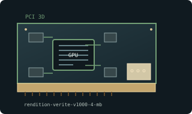

[ EARLY 2D AND 3D ACCELERATORS // IDENTIFIED COMPONENT ]
Rendition Vérité V1000 4 MB PCI
Vérité V1000 / V1000E, 1996. This entry identifies one model or reference configuration; related products and OEM variants are distinguished below.

MODEL / VARIANT: V1000, V1000E, and V2x00 are different chips; vendor-specific drivers and game-specific Vérité rendering paths affect results.
Recorded specifications
| Cataloged product | Rendition Vérité V1000 4 MB PCI |
|---|---|
| Generation / core | Vérité V1000 / V1000E, 1996 |
| Core & memory | Rendition V1000 3D engine; 4 MB local EDO DRAM on common V1000 PCI boards; hardware rasterization with host-assisted setup paths. |
| Host interface & I/O | 32-bit PCI add-in card; analog VGA output typically comes from a companion 2D VGA path or board pass-through; exact board design varies. |
| Variant boundary | V1000, V1000E, and V2x00 are different chips; vendor-specific drivers and game-specific Vérité rendering paths affect results. |
| Archival identification | Record full part number, PCB or module revision, BIOS/firmware, device/subsystem IDs, driver version, adapters, physical condition and source-document edition. |
Compatibility, service & archival notes
This is an early 3D accelerator family with board-specific memory and 2D integration; do not treat V1000E as V2x00.
Identify the board maker and chip stepping; preserve original pass-through cabling and driver disks. Inspect VGA routing, DRAM and PCI contacts before testing.
- Check signaling, slot keying, lane width, power pinout, board/module dimensions, case clearance, airflow and PSU requirements for the exact specimen.
- Use drivers supporting its device ID and target OS. Preserve original installer and firmware copies, and record their versions before changes.
- Do not energize boards with corrosion, cracks, damaged connectors, obstructed cooling or suspected shorts; document condition before bench testing.
Manufacturer, model & standards sources
- Rendition Vérité product and architecture historyModel/product-history reference; compare the exact card revision and nameplate.
- Rendition product archiveManufacturer or archived product/driver documentation; exact OEM board details may differ.
- PCI Express interface standardHost interface reference; confirm exact physical and electrical compatibility.
Reference specifications do not supersede the board vendor's manual or nameplate. Performance figures are vendor claims unless explicitly identified as measured.